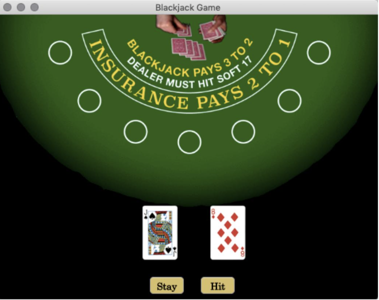

Blackjack Game GUI using MATLAB
Developing Games on MATLAB

This GUI is a graphics user interface designed on MATLAB, on which the card game Blackjack was developed to demonstrate
programming versatility and range.
Key Features:
- Use of ui-graphics (uifigure, uibutton, uiaxes, uiimage) to create an interactive, dynamic display that gives the user the ability to click on buttons on the display.
- The program shows realistic images of the first two player cards dealt. randomly for every round.
- The exact cards are displayed in the command window (rank & suit, e.g. Ace of Spades).
- The program plays Händel’s Hallelujah when the player wins and produces a gong sound when the player loses.
Key Functionalities:
- Scores were computed twice so that the player can see their score both as it is and when counting the Ace as 11. Both scores are printed every time the player gets a new card so they can make appropriate decisions for their next move.
- If the player exceeded 20 points, the program would break out of the while loop and go on to check the win conditions, which were structured in a specific order. Before going to the win conditions, the program would choose the most favorable score out of the two scores (with Aces as 1 or 11). Then if the player had 21 points, as long as the dealer did not also have 21 points, the player would have Blackjack and therefore win. If the dealer had Blackjack, this was taken care of by the dealer logic code.
- The winner was determined by choosing the most favorable score in the playerscore and dealerscore matrices and then a series of if statement in this order: if dealerscore = 21, if playerscore >21, if dealerscore >21, if playerscore = 21, if playerscore = dealerscore, if playerscore and dealerscore both < 21 (and then the conditions for this case).
- The stay and hit rectangles on the screen are actual buttons. The cards displayed on the screen and the command window output above are random and will vary every time. The output above is before the player hits any of the buttons, as the uifigure is set to close when the game finishes.
Example output from a program run
Player Card 1: Jack of Spades
Dealer Card 1: 5 of Spades
Player Card 2: 8 of Diamonds
Dealer Card 2: Queen of Spades
Player Score: 18
Player Score counting Aces as 11: 18